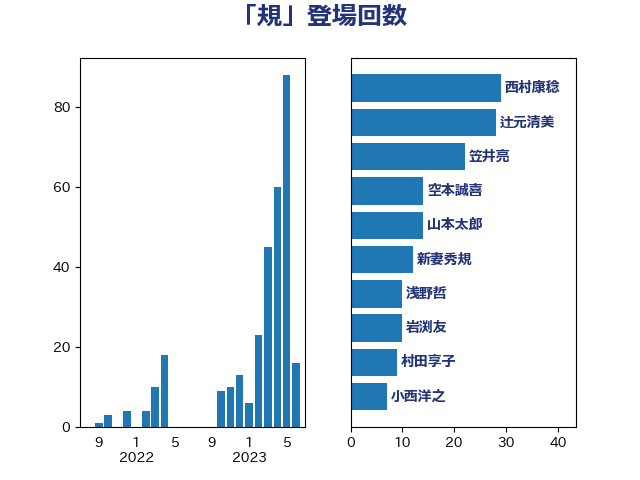

単語「規」

| 西村康稔 | 自由民主党 | 29 回 |
| 辻元清美 | 立憲民主党 | 28 回 |
| 笠井亮 | 日本共産党 | 22 回 |
| 空本誠喜 | 日本維新の会 | 14 回 |
| 山本太郎 | れいわ新選組 | 14 回 |
| 新妻秀規 | 公明党 | 12 回 |
| 浅野哲 | 国民民主党 | 10 回 |
| 岩渕友 | 日本共産党 | 10 回 |
| 村田享子 | 立憲民主党 | 9 回 |
| 小西洋之 | 立憲民主党 | 7 回 |
| 阿部知子 | 立憲民主党 | 6 回 |
| 宮沢洋一 | 自由民主党 | 6 回 |
| 鬼木誠 | 立憲民主党 | 5 回 |
| 櫛渕万里 | れいわ新選組 | 5 回 |
| 青木愛 | 立憲民主党 | 4 回 |
| 阿達雅志 | 自由民主党 | 4 回 |
| 近藤昭一 | 立憲民主党 | 4 回 |
| 赤嶺政賢 | 日本共産党 | 4 回 |
| 佐藤信秋 | 自由民主党 | 4 回 |
| 三原じゅん子 | 自由民主党 | 4 回 |
| 石橋通宏 | 立憲民主党 | 3 回 |
| 末松信介 | 自由民主党 | 3 回 |
| 井林辰憲 | 自由民主党 | 3 回 |
| 串田誠一 | 日本維新の会 | 3 回 |
| 黄川田仁志 | 自由民主党 | 2 回 |
| 野村哲郎 | 自由民主党 | 2 回 |
| 足立康史 | 日本維新の会 | 2 回 |
| 蓮舫 | 立憲民主党 | 2 回 |
| 若松謙維 | 公明党 | 2 回 |
| 穂坂泰 | 自由民主党 | 2 回 |
| 秋本真利 | 無所属 | 2 回 |
| 福島伸享 | 無所属 | 2 回 |
| 石田昌宏 | 自由民主党 | 2 回 |
| 田嶋要 | 立憲民主党 | 2 回 |
| 滝沢求 | 自由民主党 | 2 回 |
| 山口俊一 | 自由民主党 | 2 回 |
| 山下雄平 | 自由民主党 | 2 回 |
| 小沼巧 | 立憲民主党 | 2 回 |
| 古賀之士 | 立憲民主党 | 2 回 |
| 齋藤健 | 自由民主党 | 1 回 |
| 鈴木淳司 | 自由民主党 | 1 回 |
| 金子恵美 | 立憲民主党 | 1 回 |
| 道下大樹 | 立憲民主党 | 1 回 |
| 西村明宏 | 自由民主党 | 1 回 |
| 細田博之 | 自由民主党 | 1 回 |
| 神津たけし | 立憲民主党 | 1 回 |
| 石原正敬 | 自由民主党 | 1 回 |
| 田村憲久 | 自由民主党 | 1 回 |
| 浜田靖一 | 自由民主党 | 1 回 |
| 浅田均 | 日本維新の会 | 1 回 |
| 江藤拓 | 自由民主党 | 1 回 |
| 徳永エリ | 立憲民主党 | 1 回 |
| 平山佐知子 | 無所属 | 1 回 |
| 岸田文雄 | 自由民主党 | 1 回 |
| 山岡達丸 | 立憲民主党 | 1 回 |
| 尾辻秀久 | 無所属 | 1 回 |
| 小熊慎司 | 立憲民主党 | 1 回 |
| 宮本岳志 | 日本共産党 | 1 回 |
| 大西英男 | 自由民主党 | 1 回 |
| 吉良よし子 | 日本共産党 | 1 回 |
| 原口一博 | 立憲民主党 | 1 回 |
| 佐々木紀 | 自由民主党 | 1 回 |
| 伊藤忠彦 | 自由民主党 | 1 回 |
| 仁比聡平 | 日本共産党 | 1 回 |
| 中野洋昌 | 公明党 | 1 回 |
| 上田英俊 | 自由民主党 | 1 回 |
| 三浦信祐 | 公明党 | 1 回 |
| 三ッ林裕巳 | 自由民主党 | 1 回 |